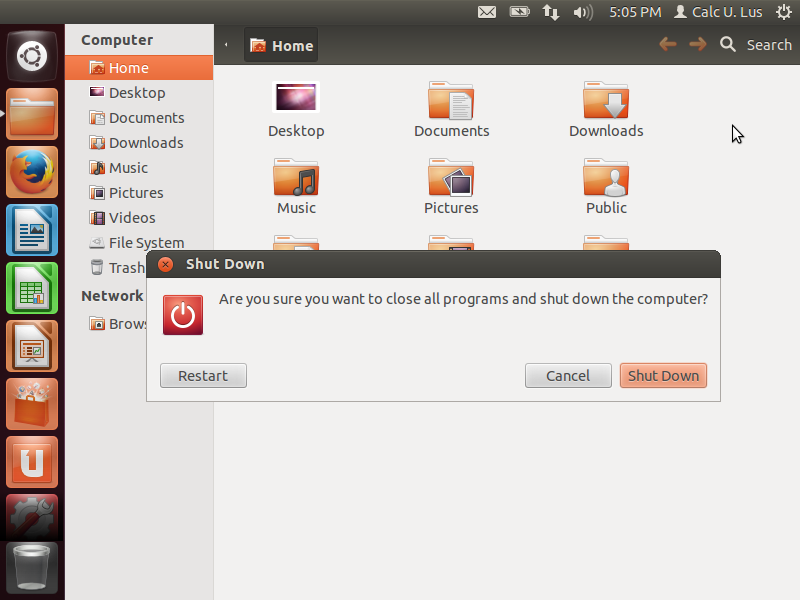
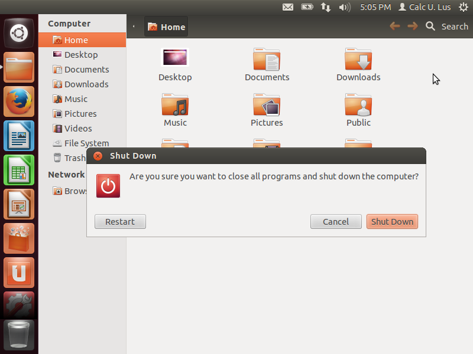
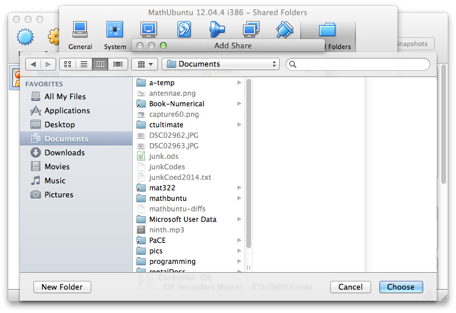
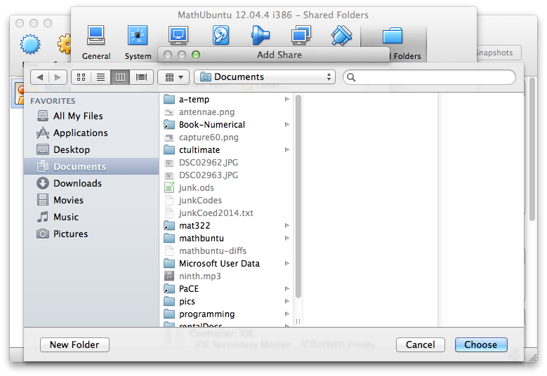

Setting up the Virtual Machine (MathUbuntu)
The default virtual machine leaves a lot to be desired. Its resolution is low and it has no access to the host machine's files, for example. These few steps will fix both these deficiencies plus some others. Start by launching the virtual machine.
Mouse over the thumbnails on the left for step-by-step instructions and screenshots. NOTE: Screenshots are representative of what you will see. Your images may vary, but they should be close enough that you can still follow the directions.

 



 

Message goes here.